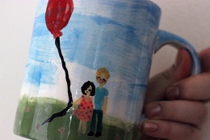
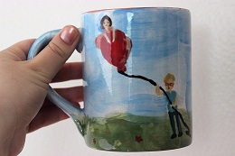
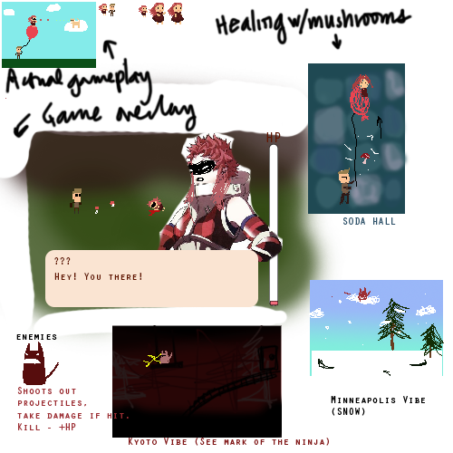
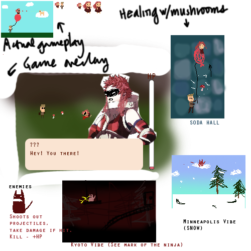
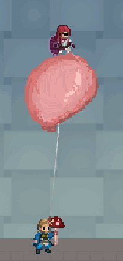
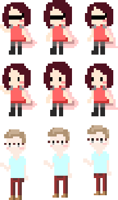
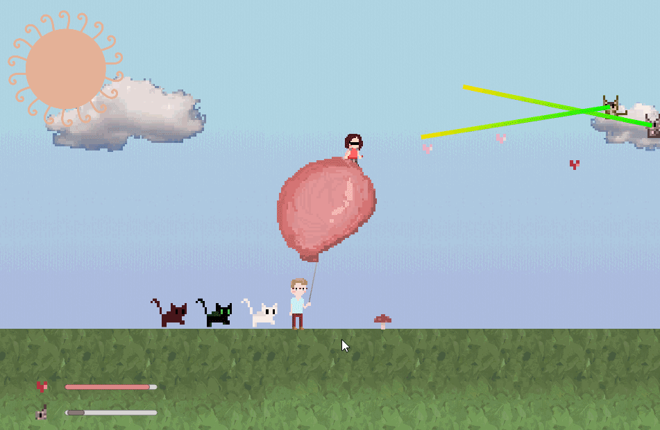
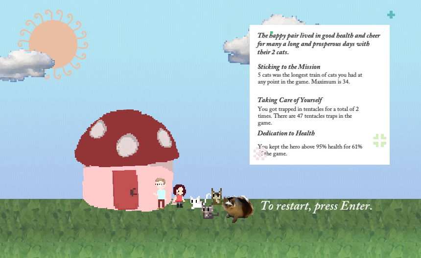

I made a game called Every Day The Game for my now fiance.
Note that the rest of the post is a direct copy of what is on my github project README.
Play
Download at Itch.io
Watch PlayThrough Video on YouTube
Concept
May or June of 2014, we celebrated our first year anniversary at a paint-your-stuff place and I painted this.
 
I didn’t think of it as a game idea, but a cutesy little design.
After we moved in together and I started my first full time job as Software Engineer at Zynga, I casually proposed marriage on a daily basis. The answer? “Someday..”, “Definitely not now”, “If I marry anyone it’s you but I’m not ready yet,” etc.
Remind you of something? It’s probably this: Stable Marriage Problem. If it’s anything that sticked from CS170, that one was it. I optimized by asking my first choice person every day until he was married to me or somebody else. Except, I decided to stop after a year, and decide to channel all of my energy towards a side project.
Since I started work, I had a difficult time finding a project I felt passionate about. Game Jams are fun, but I wanted to work on something more long term. After serious discussion with my (hopefully) future spouse, it sounded like engagement was something that had to wait a while. Perfect.
By April 2016, I think I had some ideas. I watched a video of a proposal through a game, and it was a dungeon crawler. The player (the developer’s girlfriend) played as a hero and saved the princess. The hero then proposed to the princess. While this is cute, I thought there was opportunity for improvement, especially requiring the player to shift their perspective from hero to princess. My boyfriend is no princess, and I didn’t want him to be trapped for the whole game (this idea is interesting too, but I’m no good with designing puzzles). Instead, I wanted him to be the healer who has to balance his own safety with the hero’s effectiveness at dealing damage where they need to. Somehow the cup design made it back into my mind and I started sketching out ideas. I wanted the hero to be clearly a DPS, but I wanted enemies to be cats, and I don’t want cats to be hurt, so I switched it around to be love bullets. (Thanks No Game No Life!)
I sketched up stuff on bart, and did some concept art. The concept art is from May 2016.
 

Back at the time, I had been playing a lot of Fire Emblem: Fates. I loved the combination of choices/dialogue/story and gameplay. The winter prior, the target player was playing a lot of Electronic Super Joy, a very fast paced and exciting sidescroller. I wanted to make something that combined the two.
In general, I like games that bind users to “time”. If you play my Labor Day the Game, each minute is 2 hours of a workday, so the game lasts 4 minutes. Similar idea for Slinging Ink. I wanted the game to be broken up to times of the day:
Level 1. Morning Clouds (9AM - 11AM)
Level 2. Tiled Prison (11AM - 5PM)
Level 3. Setting Sun (5PM - 8PM)
Level 4. Snowy Darkness (8PM - 3AM)
Level 5. Home (3AM - 9AM)
The idea is that the day is experienced between the two main characters of the game, and wish for a day like the one experienced for every day for the rest of their lives. I tried to correspond each level to shared experiences; however, I will leave this to your imagination.
Development
My first commit on github is December 2016, and I think that was when I started legitimately writing code on it.
In August of 2016, I had worked on a side scroller with a similar idea called Amaterasu, which, to be honest, is a pretty crappy game. I tried to experiment with sound beat detection, which is a recurring theme in my development life. But it a similar layout sidescrolling design as this game.
I think I took some of the code from that, used stand-in assets, and started developing during my winter break. Of course, this was done in secret. Hard to do when we live together.
This screencapture was taken five days before Christmas 2016.

Back then, I was still attached to Fire Emblem character designs and made variations of existing designs.
A few months later, I realized that it wasn’t very “me”, so created the current version character sprites.

Early 2017, I reached out to my composer friend Eric Delgado. Eric is the first friend I made in UC Berkeley Symphony Orchestra. We met to brainstorm the soundtrack in early January 2017. I was able to commission for him for the full soundtrack, which you can listen to here.
I got my game design buddy Calvin ‘KirbiKaka’ Lu to review my first draft of the script (dialogue) in late December 2017.
My first deadline (“release date”) was mid May of 2017. It was quickly revealed that Mid May was not going to be the release date, not because of development of this game, but due to the target player’s life schedule. (Getting a PhD is hard.) I postponed the release date to mid September 2017 after this realization.
I showed Eric my first build mid June of 2017, and shared with KirbiKaka shortly after.
We started compiling bugs after getting a couple more testers on a shared doc.
At the start of this, the game had only two main mechanics: healing with mushrooms and moving the hero to get as many cats. I got feedback that some obstacles on the ground and jump mechanics would be nice to have. I didn’t want to build out elaborate platformer obstacles, and wanted to stick to a simple, but cute one. I chose tentacles as a fun obstacle that could insta-trap and end the game.
Lots of bugs were found. Here’s one of the screenshots one found:

At this point, I had raycasting and line renderers as the attack mechanic of the enemies (evil cats). I still have the code saved on the radar branch.
It looked like this: 
Unfortunately, due to the raycast hits being super finnicky, I changed it to projectiles. It was not worth the bad UX. I probably spent the most time in the project trying to get raycast to work.
At this point, there were NO checkpoints in the game. There were two ways one could lose: 1. tentacle trap insta-kill 2. Hero runs out of HP. (Then there are other ways to end the game, like bad decisions) The most frustrating part was the tentacle trap insta-kill. After a small timing error, a player would have to restart the game from the beginning, including the tutorial. I ended up, as a player, typing “asfadfaa” as the player name and home on many occasions. Something was wrong. Flappybird is not narrative, so you can fast fail and have a quick loop. Not this game.
Checkpoints were actually quite easy to implement due to the code architecture I chose. I think this should be one of the first things to do, including a debug level select. I still don’t have a debug level select menu, but I wish that I do on many occasions. Sometimes as developers we can be averse to putting in energy to something that’s not directly part of the user experience.
Some numbers I tweaked: speed & damage caused by bullets (hero bullets & cat bullets), mushroom healing power, sine & consine waves of cat bullets, speed of background scroll in each level. It could still use more work. I think this is pretty subjective.
One of the last pieces that I implemented that is significant in the game design is report card at the end. 
No matter how many times you fail, you will eventually end up beating the boss with the new checkpoint system. I didn’t like this, because I wanted each experience to matter. However, an experience is just unpleasant if you have to re-do the same levels over and over again. I’m hoping that the report card functionality gives more replay value, though, it’s not really what I’m going for for the core purpose of this game. The first priority of this game is telling a story. That’s why we have checkpoints, so you can progress through without getting too angry. But in addition, I wanted to make sure that the player knows what they did in the game mattered in the end. Even if the player gets a proposal at the end no matter what they did to get there, the numbers mean something.
Before I do it…
The target player, my (hopefully) future spouse doesn’t care for surprises. Nor does he really want something that is showy. For example, he’d definitely not enjoy getting proposed to in the middle of a baseball field during a game. In fact, he probably knows that an official proposal is coming up soon, and that I’m working on a secret project.
So, in the end, this was for me, so I can keep making shoddy pixel art animations, coding for fun, reflecting on game design and development.
Postmortem
First things first, we are now engaged. He selected “Sure”!
I was very very nervous to get him to play the game. It went like this:
Me: “You know my side project I’ve been working on secretly?”
Him: “Vaguely..”
Me: “It’s done now, so you can play it. But beware, you might not be able to come back to this side of the world after you play it” (Trying to suggest it’s a big decision to play the game)
Him: “Will it wreck me?”
Me: “Maybe…”
Him: “Oookay.”
Me: “Ok can you play it at 5pm today?”
Him: “Ok.”
A few things to note:
- Game was pretty hard. He focused on the game and not the actual story or visuals. He did not get any of the references.
- It was definitely a surprise. After beating the last boss (who, by the way, I probably forgot to mention is my parents’ cat Rin) he looked very surprised and delighted.
- Me hovering behind him, watching his every move during the game (and backseat gaming) was maybe a little uncomfortable for him.
Overall, I’m glad I did this, and wouldn’t change much (apparently the “mask” on the hero looked like a blindfold.. I agree…). One thing to note for those of you wanting to do creative marriage proposals – it’s not very dramatic or visually interesting. People have photos of engagements where they’re on a boat, top of a mountain, on one knee…. this is just people looking at screens. Well, whatever works, right?